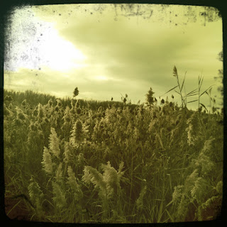

Recovered weblog entry
Wetland as winter comes on

Shores turn brown as sure as meadows with the coming of winter.
Lens: Jimmy
Film: Float

Recovered weblog entry

Shores turn brown as sure as meadows with the coming of winter.
Lens: Jimmy
Film: Float